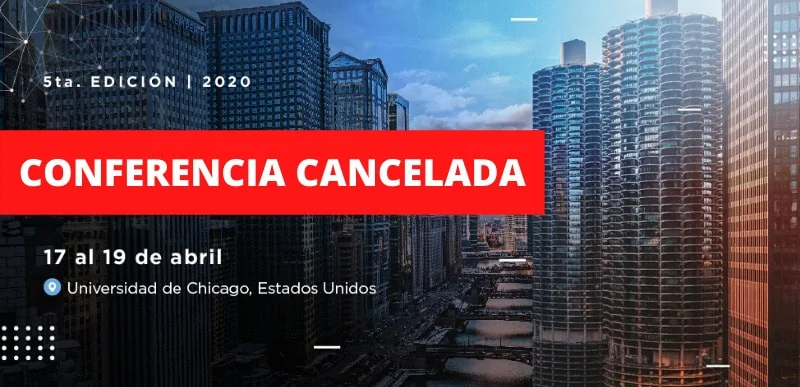

Masters 2020: Masters Argentina Conecta
2020Encuentros virtuales
Masters Argentina Conecta
La conferencia presencial prevista para Chicago se canceló por el COVID-19. En su lugar, el ciclo Conecta abrió conversaciones virtuales y acompañó la iniciativa solidaria #SeamosUno.
- Ciclo virtual
- Junio y julio de 2020
- Formato
- Ciclo solidario de cinco webinars
La conferencia presencial de 2020 fue cancelada por la pandemia.

Master argentina conecta
PRESENTAMOS UNA NUEVA INICIATIVA
Como estudiantes y graduados argentinos de maestrías en el exterior, creemos que tenemos un fuerte rol para contribuir con el país, sobre todo en el desafiante contexto del COVID-19. Por ello creamos Masters Argentina Conecta, una nueva iniciativa de Masters Argentina, con la misma visión de encuentro, reflexión y debate para el desarrollo del país, en un ámbito de eventos online y con un fin solidario. Para lograrlo, decidimos aliarnos a la causa de #SeamosUno, ayudando a cubrir las necesidades de 4 millones de personas argentinas afectadas por la pandemia, distribuyendo cajas de productos alimenticios y de higiene.
Durante junio y julio de 2020 realizamos una serie de 5 webinars con destacados oradores. Gracias al aporte de los asistentes y las empresas que nos auspiciaron, pudimos donar alimentos y productos de higiene a cientos de familias a través de #SeamosUno.
Durante junio y julio de 2020 realizamos una serie de 5 webinars con destacados oradores. Gracias al aporte de los asistentes y las empresas que nos auspiciaron, pudimos donar alimentos y productos de higiene a cientos de familias a través de #SeamosUno.
Video de la ediciónReviví las conversaciones
Abrir ↗Ver video acá
Primer webinar
Segundo webinar
El segundo webinar "Innovación y Tecnología: Emprendimientos con impacto", trató en el comienzo sobre las exploraciones privadas al espacio exterior. Seguido a ello, debatimos sobre innovación y tecnología con impacto social, y la posición de la Argentina como potencial líder en la revolución del agtech y la biotecnología.
Ver publicación original ↗Tercer webinar
En el tercer webinar: "La reinvención del sector privado en tiempos de pandemia", se discutió sobre el trabajo en tiempos de la pandemia, y cómo las empresas deben plantearse otro modelo de operaciones para el día después. Además, se habló sobre la reestructuración de costos y reinvención digital requeridos en este contexto, y el concepto de bienestar de los empleados frente a la ansiedad, incertidumbre y depresión actuales.
Ver publicación original ↗Cuarto webinar
El cuarto webinar: "Argentina: Los desafíos del día después", fue un encuentro íntimo con Facundo Manes, en donde se discutió acerca de los desafíos que tiene el país para poder recuperarse de los efectos que ha generado el COVID-19. La conversación abordó temas de salud que acechan a los argentinos desde una perspectiva neurocientífica, así como también sobre la necesidad de desarrollar un plan político, social y económico para cuando finalice la pandemia.
Ver publicación original ↗Quinto webinar
En el quinto webinar: "Perspectivas sobre el presente y futuro de la Argentina", tuvimos una charla con María Eugenia Vidal, Ex Gobernadora de la Provincia de Buenos Aires. Se habló acerca de los desafíos políticos, económicos y sociales que se avecinan en nuestro país, su aporte a la juventud argentina desde un nuevo rol post-gestión y también sobre el liderazgo femenino en tiempos de pandemia.
Ver publicación original ↗